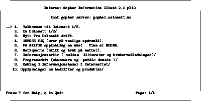

GOPHER ble funnet opp ved University of Minnesota, og var det første interaktive og heldistribuerte Internet informasjonssystemet, mao. et system beregnet på å finne fram og lese informasjon der den befinner seg og fra der du befinner deg.
En Gopher tjener består av en samling ``dokumenter'' og en samling menyer. Fra menyene pekes det ut dokumenter (og evt. bilder)., men det kan også pekes til menyer i Gopher tjenere andre steder i verden. På denne måten kan Gopher binde sammen informasjon på kryss og tvers i Internettet.
Det finnes tusenvis av Gopher tjenere ute i nettet - både på universiteter, offentlige organisasjoner og i kommersielle firmaer.
Det er laget et eget system for å søke i det såkalte ``Gopher space''. Systemet kalles Veronica, og består også av en rekke tjenere rundt i verden.
